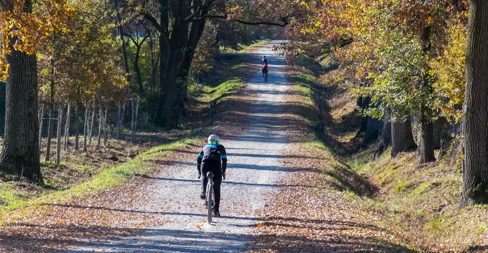

Percorso +3 · Tematico
Gravel bassa valle
Percorso pensato per gli amanti della Gravel
In Bici
MTB/EBIKE
- Durata
- 1 giorno
- Lunghezza
- 59 Km
- Difficoltà
- Gravel-Style
- Dislivello
- 1267 Mt
Traccia (58,9 km)Partenza e arrivo
Porta il percorso con te
Scarica la traccia per il navigatore o per un'app come Komoot, OsmAnd o Wikiloc.
Sentieri e cammini attraversati
- Sentieri CAI
- nr. 46
- Cammini
- Via degli Dei SOFT 7 - Pista ecoturistica Sieve
Descrizione del percorso
Leggi il racconto di Orme del Mugello
Si parte da Borgo San Lorenzo, il centro più grande del Mugello, noto per la sua tradizione agricola e per il caratteristico centro storico. Qui è possibile ammirare la Pieve di San Lorenzo, un'importante testimonianza storica e artistica del Mugello. Le sue origini documentate risalgono al 934, ma la struttura attuale deriva da una ricostruzione romanica tra il XII e XIII secolo, caratterizzata da una facciata sobria e una grande abside semicircolare. Il campanile in cotto, con pianta esagonale irregolare e cinque livelli, ospita sei campane fuse nel 1826.
All'interno, tre navate conducono all’imponente abside, dove si trova l'altare maggiore con un Crocifisso ligneo del XVI secolo. Tra le opere più preziose spicca un frammento di Giotto, una Madonna col Bambino, oltre a dipinti di Cesare Velli, Jacopo Vignali, Matteo Rosselli e Piero di Cosimo. Un tempo la pieve custodiva anche un busto di San Lorenzo attribuito a Donatello, poi trafugato. Questo edificio, tra restauri e aggiunte, resta un simbolo di fede e arte nel tempo.
Dopo una pedalata tra le strade del paese, ci si dirige verso Scarperia, attraversando un paesaggio tipico toscano fatto di dolci colline e campi coltivati.
Attraversiamo Montefloscoli, dove è possibile visitare La Chiesa di San Michele. L’edificio è un piccolo tesoro storico e spirituale, strettamente legato al borgo e alla sua comunità. Risalente al periodo medievale, quando la zona era abitata da agricoltori e pastori, la chiesa ha subito diversi restauri ma ha mantenuto il suo ruolo centrale nella vita religiosa locale. Il nome Montefloscoli, forse derivato dal latino mons flosculorum ("monte dei piccoli fiori"), richiama la rigogliosa vegetazione circostante. Montefloscoli è anche legata a Domenico Bartolucci (1917-2013), celebre direttore della Cappella Sistina e compositore di musica sacra. Nonostante la sua carriera in Vaticano, rimase profondamente legato al Mugello, dove tornava spesso per dirigere e ispirarsi.
Superiamo la frazione di Panicaglia e dopo poco, incontriamo sul percorso un altro edificio storico, la Chiesa di San Giovanni Maggiore: notevole esempio di architettura medievale nel Mugello, con una storia secolare e un ricco patrimonio artistico. Citata nei documenti già nel XII secolo, è dedicata a San Giovanni Battista, patrono di Firenze, e conserva preziosi affreschi e dipinti che narrano la vita del santo. L’altare maggiore e le cappelle laterali arricchiscono l’ambiente con decorazioni di pregio, mentre la struttura romanica della chiesa crea un’atmosfera di profonda spiritualità. Uno degli elementi più affascinanti è il campanile longobardo, con una base massiccia e aperture ridotte, che suggerisce un originario scopo difensivo. La sua forma ottagonale e la disposizione strategica delle finestre indicano una possibile funzione militare oltre che religiosa. Probabilmente danneggiato dal terremoto del 1919, subì restauri che ne modificarono alcuni dettagli. Questo campanile unico e la bellezza della chiesa rendono San Giovanni Maggiore un tesoro storico e artistico da preservare.
Oltrepassiamo il borgo di Grezzano, e ci dirigiamo verso Luco di Mugello, dove è presente un importante esempio di architettura sacra, legato all’antico monastero camaldolese femminile, la chiesa di San Pietro. Fondata nel 1086 e consacrata nel 1220, ha subito trasformazioni nel corso dei secoli, raggiungendo la sua forma attuale tra il XV e il XVII secolo. Un ampliamento tra il 1473 e il 1476, attribuito a un allievo di Giuliano da Sangallo, introdusse elementi rinascimentali. Nel 1523, la chiesa accolse il pittore Andrea del Sarto, rifugiatosi qui durante la peste fiorentina. Nel 1808, con l’occupazione francese, il monastero fu soppresso e le monache allontanate. Nel 1871, il complesso divenne un ospedale fino al 1989, mentre la chiesa continuò la sua funzione parrocchiale. Tra il 1930 e il 1932, fu restaurata con il contributo dell’artista Dino Chini. Sulla facciata spicca una lunetta in maiolica raffigurante la Madonna col Bambino, donata dalla famiglia Traversi Barchielli nel 1930 e ispirata allo stile rinascimentale.
Arriviamo in poco tempo all’Autodromo del Mugello, una delle piste più celebri del motorsport. Le sue origini risalgono ai primi del Novecento, quando le corse si svolgevano sulle strade pubbliche del Mugello. Questo storico tracciato, attivo dal 1914 al 1970, ha visto protagonisti come Enzo Ferrari, Nuvolari e Maserati, ma la crescente preoccupazione per la sicurezza portò alla chiusura delle competizioni su strada e alla costruzione dell’attuale circuito, inaugurato nel 1974 grazie all'intervento della Ferrari. Il tracciato, lungo 5,245 km e con 15 curve, alterna rettilinei ad alta velocità a curve tecniche, come le celebri Arrabbiata 1 e 2. Il Mugello è sede del Gran Premio d'Italia di MotoGP e ha ospitato anche la Formula 1 nel 2020 per il Gran Premio della Toscana. Le curve portano i nomi di località storiche e figure leggendarie come Materassi, in omaggio al pilota toscano. La pista è anche avvolta da leggende, come quella della maledizione di Baccaleo. Un luogo ricco di storia e emozioni, che continua ad affascinare il mondo del motorsport.
Siamo ormai prossimi a Scarperia, un affascinante borgo medievale nato come avamposto strategico lungo la via che collegava Firenze a Bologna. Reso famoso per la produzione delle sue lame, divenne presto un centro di grande importanza economica e culturale. ll Palazzo dei Vicari, situato nel cuore del borgo, è un importante esempio di architettura medievale e rinascimentale. Fondato nel XIV secolo come residenza del Capitano, subì ampliamenti nel 1412, quando divenne sede del vicariato. L'edificio, danneggiato dal terremoto del 1542, fu restaurato e acquisì l’aspetto attuale, con l’aggiunta di merli e beccatelli nel XIX secolo. Il palazzo includeva anche edifici di servizio come la cucina e le prigioni. Al suo interno si trovano affreschi della scuola del Ghirlandaio e l’antico orologio della torre, opera di Filippo Brunelleschi. La facciata è decorata con stemmi in terracotta invetriata dei Vicari. Oggi il palazzo ospita il Museo dei Ferri Taglienti, dedicato alla tradizione della lavorazione dei coltelli a Scarperia, offrendo un’interessante testimonianza storica, artistica e culturale per i visitatori.
Ci lasciamo il paese alle spalle. Poco distante del borgo ci troviamo di fronte ad un imponente croce lignea che domina sulla zona dei “Crocioni”, non distante dalla vicina Pieve di Santa Maria a Fagna, ben visibile da tutta la zona del Mugello centrale. Siamo a Fagna, luogo di devozione e eventi religiosi in particolari date, nonché simbolo di devozione della comunità del luogo e Scarperia. Continuiamo lungo le dolci campagne mugellane, fino a raggiungere Sant’Agata, importante crocevia di pellegrini ed escursionisti. All’interno del borgo è presente la Chiesa di Sant’Agata. Sebbene si ritenga che un luogo di culto esistesse già in epoca longobarda, la chiesa è dedicata a Sant’Agata, martire siciliana. Nel Medioevo, acquisì una grande importanza religiosa e territoriale, con giurisdizione su diverse chiese locali. Nonostante i vari restauri, la struttura romanica originaria è rimasta intatta, con una facciata sobria in pietra locale e un campanile a pianta quadrata che domina il paesaggio. L'interno custodisce numerose opere d'arte sacra, come un fonte battesimale romanico del XII secolo, dipinti rinascimentali e barocchi, e un crocifisso ligneo medievale. Accanto alla chiesa, un chiostro in pietra e il Museo di Arte Sacra raccontano la storia religiosa del luogo, con opere d’arte sacra, paramenti liturgici e antichi codici miniati. La Pieve di Sant’Agata, con il suo fascino millenario, continua a essere un punto di riferimento per la spiritualità e la cultura del Mugello.
Da Sant’Agata arriviamo in un altro luogo di notevole importanza. Ricco di storia, sia medievale che contemporanea, Galliano è un borgo dal fascino di un tempo. L’Ospedalino di Galliano, ad esempio, è una testimonianza storica di assistenza ai bisognosi. Fondato nel Medioevo, nasce come struttura di accoglienza per pellegrini e viandanti lungo le vie di transito tra Firenze e la Romagna. Originariamente gestito da ordini religiosi, l’Ospedalino offre cure mediche basilari e rifugio a malati, indigenti e orfani. Unico esempio di ospedale rurale, svolge un ruolo fondamentale per la comunità locale, con religiosi e laici che si occupano delle cure, spesso usando rimedi tradizionali. Con il tempo, la sua funzione assistenziale diminuì, ma il suo valore storico e spirituale rimane significativo. Al suo interno si trovano affreschi di scuola fiorentina e altari votivi, che testimoniano la forte componente religiosa che accompagnava l’assistenza, rendendo l’Ospedalino un luogo di grande rilevanza culturale e storica.
Si prosegue su strade bianche in direzione di San Piero a Sieve. attraverso la campagna è possibile ammirare le vette che racchiudono la valle del Mugello, dai monti della Calvana fino al Monte Falterona, dove nasce il fiume Arno. Raggiungiamo il Convento di Bosco ai Frati, uno dei più antichi complessi francescani della Toscana. Fondato originariamente in epoca longobarda come eremo, nel XIII secolo fu preso in custodia dai frati francescani, che lo trasformarono in un centro di preghiera e assistenza ai viandanti. La sua storia è indissolubilmente legata alla famiglia Medici, che nel XV secolo finanziò la sua ristrutturazione, affidando il progetto all’architetto Michelozzo. Sotto il patrocinio dei Medici, il convento divenne un importante centro religioso e culturale, frequentato dalla famiglia granducale. Nel convento si trovano opere d'arte di grande valore, come il Crocifisso ligneo di Donatello, e dipinti della scuola fiorentina rinascimentale. Il convento conserva anche una biblioteca con antichi manoscritti e reliquiari di pregio. Oggi, oltre a essere un luogo di spiritualità, è una tappa ideale per escursioni a piedi e in bicicletta, offrendo ai visitatori un’occasione unica di immergersi nella storia religiosa e culturale del Mugello e dei Medici.
Ci immergiamo nei boschi adiacenti il convento e in pochi chilometri arriviamo a San Piero a Sieve, tappa importante lungo la Via degli Dei. Tra gli edifici che meritano una menzione, la Pieve di San Pietro è uno di questi; luogo di culto tra i più antichi e significativi del Mugello, con oltre mille anni di storia. Edificata nell'XI secolo, si trovava lungo un crocevia di strade medievali che collegavano Firenze alla Romagna e al Casentino. La pieve divenne il centro religioso e sociale del borgo, che si sviluppò attorno ad essa. Nel corso dei secoli, l’edificio subì vari restauri, mantenendo però il suo carattere romanico. Durante il periodo dei Medici, la chiesa divenne ancora più importante, grazie al supporto della famiglia granducale, che ne favorì il restauro e contribuì alla crescita del borgo. La struttura conserva una facciata sobria e un interno con colonne in pietra serena, mentre il campanile medievale svetta sopra l'edificio. All’interno, si trovano opere d'arte di scuola fiorentina, un fonte battesimale in pietra e un crocifisso ligneo medievale. La pieve è legata anche a leggende locali e al passaggio di personaggi illustri, come San Giovanni Gualberto.
Lasciamo San Piero a Sieve con la sua ricca storia alle spalle, e in pochi chilometri, attraverso strade a bassa percorrenza veicolare e percorrendo in parte la pista ecoturistica lungo il fiume Sieve, raggiungiamo nuovamente Borgo San Lorenzo, meta di questo affascinante percorso.
La maledizione di Baccaleo
E’ legata alla figura di un frate vissuto nel Mugello nell’Ottocento. Prima di morire, espresse il desiderio di essere sepolto nel suo podere, lontano dal cimitero del paese, per trovare finalmente pace. Scelse la campagna di Scarperia come luogo di eterno riposo, ma il destino volle diversamente: proprio su quel terreno venne costruito l’Autodromo del Mugello.
Da allora, si dice che il suo spirito si vendichi di coloro che disturbano la sua quiete. Ogni anno, quando le gare riempiono la pista, nuvole e pioggia avvolgono il circuito, come se il frate volesse ricordare la sua presenza.
Dormire, mangiare e prodotti lungo il percorso
Strutture ricettive (41)
- Affittacamere Al Mulino contatti
- Affittacamere Via Degli Dei contatti
- Agriturismo Borgo Scaffaia contatti
- Agriturismo Il Belvedere contatti
- Agriturismo Pian Barucci contatti
- Alla Corte Di Carla contatti
- BeB AURA contatti
- BeB CIRCUIT contatti
- BeB IL PITTORE contatti
- BeB IL PODERE DELLA PIAZZA contatti
- BeB LA CASA DI COSIMO contatti
- BeB LA PIEVE contatti
- BeB VACANZE IN MUGELLO contatti
- Borgo! Hospitality contatti
- Camping Village Mugello Verde contatti
- Casa Amerigo contatti
- Casale San Giorgio contatti
- Castello Del Monsignore contatti
- Catelaccio contatti
- Fattoria La Topaia contatti
- Hotel Ebe contatti
- I Suoni Del Bosco contatti
- Il Borghetto contatti
- Il Borgo Di Elisa contatti
- IL COLLE BeB contatti
- Il Nido di Gabbiano BeB contatti
- La Corte Di Ronzano contatti
- La Felicina contatti
- La Terrazza contatti
- Locanda Degli Artisti contatti
- MONSIGNOR DELLA CASA COUNTRY RESORT eSPA contatti
- Mugello Hostel contatti
- Mugello Vacanze contatti
- My Home contatti
- Podere La Casella contatti
- Poggio Savelli contatti
- Residences E Appartamenti- Villa Torricelli Il Giardinetto contatti
- Short Term Rental In Borgo San Lorenzo contatti
- Short Term Rental In Scarperia E San Piero contatti
- Tenuta Le Tre Virtu' contatti
- Villa Medicea Lo Sprocco contatti
Aziende (11)
- Azienda Agricola Palazzo Vecchio contatti
- B.beb La Casa di Cosimo
- Banco Fiorentino - Filiale di Borgo San Lorenzo
- Banco Fiorentino - Filiale di Luco di Mugello
- Banco Fiorentino - Filiale di Scarperia
- Camping Village Mugello Verde contatti
- Marchisoro Farm
- Monsignor della Casa Country Resort e Spa
- Rifondazione agricola di Sandra Nerbosi contatti
- Società agricola Bacciotti s.s. di Sandra e Roberto Mongili contatti
- Tenuta Cafaggiolo contatti
Il nome della struttura porta al suo sito web; "contatti" apre la scheda con telefono e mail sul portale turistico Mugello Toscana (per chi non ha un sito c'è solo quella). Le aziende portano ai loro siti. Sono tutte segnate anche sulla mappa.
Percorso, traccia e testi di Orme del Mugello, pubblicati con il loro permesso.